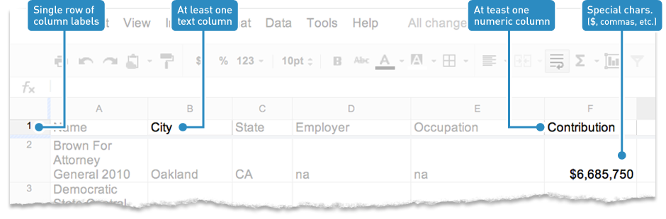
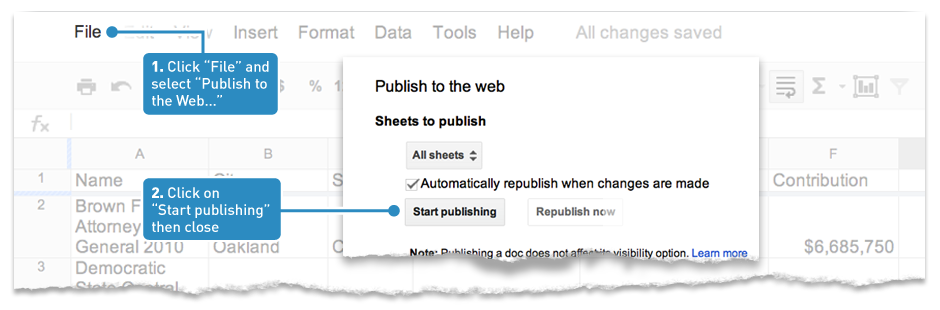
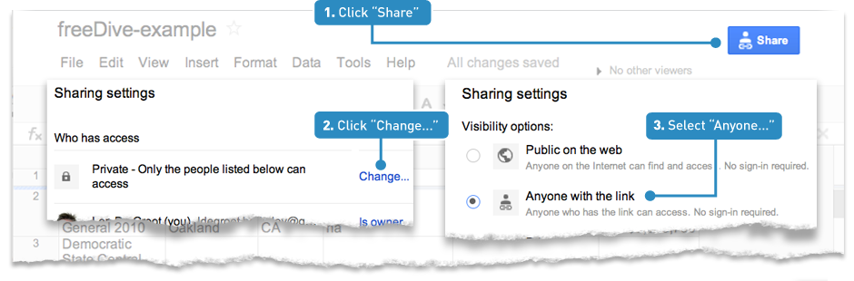
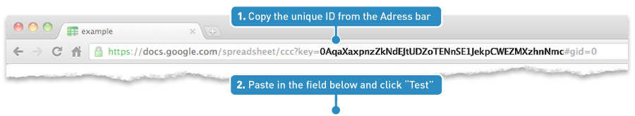

Welcome to the freeDive wizard — your guide to making a searchable databaseIf you're new to freeDive, check out our how-to video. Start with a clean Google Spreadsheet. If you don’t know what this means, read our data cleaning tutorial. Make sure your spreadsheet has the following: Publish your spreadsheetThis step gives freeDive access to your data by publishing your spreadsheet to the Web. Share your spreadsheetThis step gives freeDive access to your spreadsheet URL. Enter your spreadsheet IDfreeDive accesses your spreadsheet using the unique ID in the spreadsheet URL. Click to practice with a spreadsheet. Select the columns you want to include in your tableAt least one column must contain numeric data. We recommend that you select five columns or fewer to provide the best user experience. You can use more but the absolute limit is 10 columns. If you are using our example, "Contribution" is numeric, so make sure it's checked. You are working on spreadsheet: Check the columns you want to use: Retrieving column data... Set the size of your tableSetting the size of your table directly impacts how your reader interacts with your data. A too-small table makes the data hard to read and an overly large table can overwhelm your user. Set the height to 300-600 pixels (size of your content area) if the table will be above a story. If your table will stand alone on a page, 600-800 pixels is better because it gives the reader access to more data.
Set up the search widgetThe first thing users will see is a search widget. It lets them search the entire database and will display the initial results. Write a headline Customize or use the default headline
Would you like to include a chart? (optional)
This product is experimental and should be used with caution. If No, please click Next.
Customize the results filtersUsers can refine their search results with additional filters — which is especially helpful with large databases. You must use at least one filter and a related data column. You can mix and match up to three filters. To see them in use, check out this example. 
Define the primary filter (required)
Congratulations! You're done...Download an HTML file to use in an IFRAME (recommended)
IMPORTANT: Rename the downloaded file to "yourname.html" <iframe src="URL" width="100%" height="300" frameborder="0" ><p>Your browser does not support iframes.</p></iframe> Or copy and paste this embed code into your post...
|